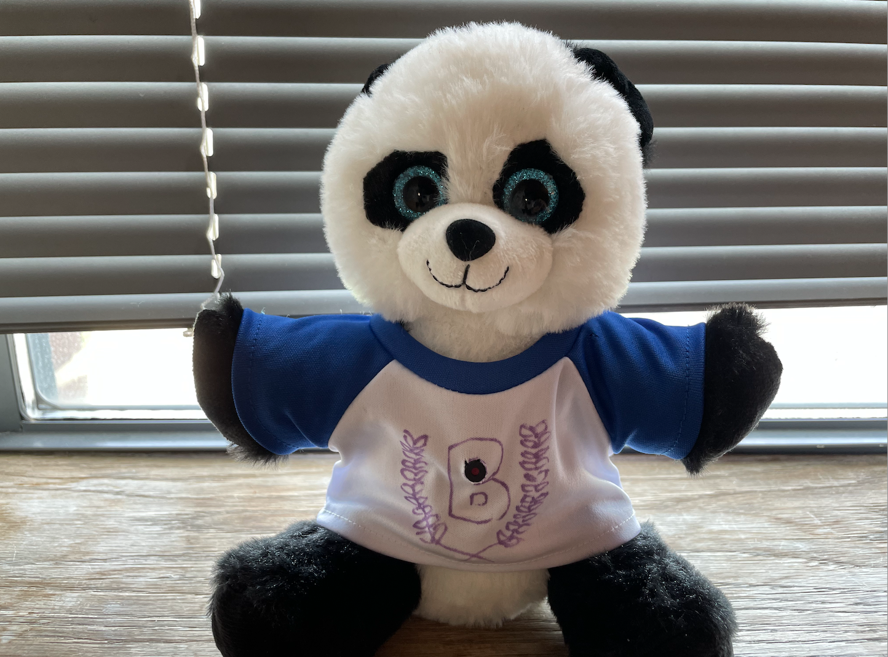
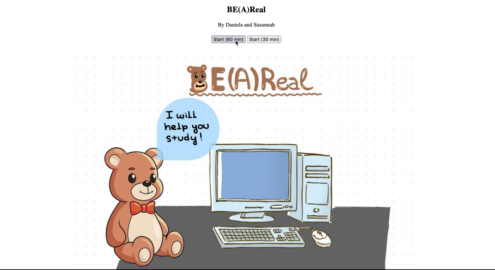

The idea for this project came from a problem we often encounter: focusing on studying.
The world offers so many distractions, such as social media, including Be Real.
Inspired by this social media, we present BE(A)Real, a Bear that has an embedded ESP32-Cam:

The ESP32-Cam connects to the internet network over Wifi, and acts as a server.
When you start the server, you can connect to the ESP32-cam (Bear) from your computer,
and open the browser and connect to the address provided and you will see the following:

The website allows you to start the timer. Once the timer starts, the ESP32-cam will take a photo
of you at some point during the study session. Here is an example of the code running and showing a photo at the end:
Then, you can download the photo and share with your friends through your favorite social media.
Technical Details
If you want to implement the same code, you can find the source code and a read me with the implementations details are in our Github page:
BE(A)Real Project GitHub page
Challenges
The initial idea was to connect the ESP32-Cam to send photos to the computer, and then use Python to post the picture to Twitter.
We encountered difficulties in integrating to Twitter as the authentication methods recently changed. Based on that, we decided to
change gears and work on a "website" that would allow the user to save the photos.